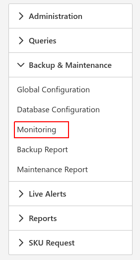
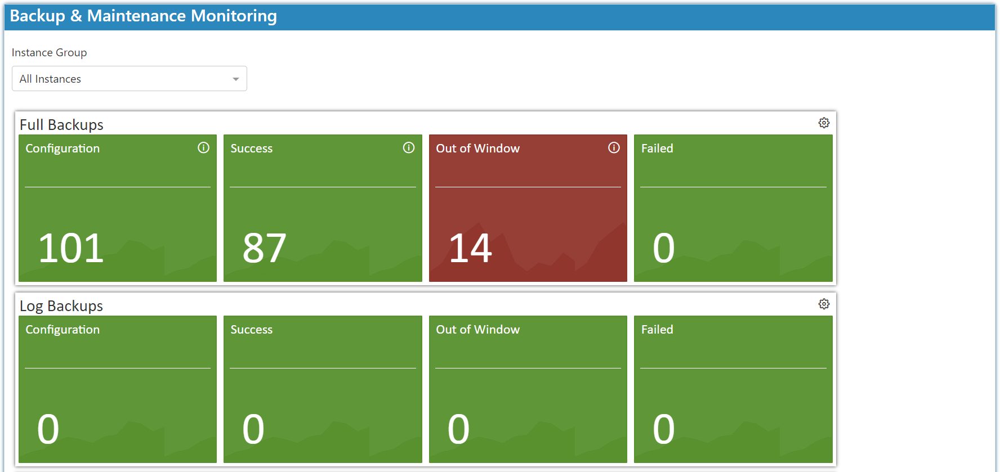

Introduction
To get started select the backup and maintenance Icon and choose monitoring:

Here you can view the status of the monitor backup and maintenance solution. You have the option to narrow it down with groups as well.

- Configuration - the number of databases the service applies to.
- Successful - successfully checked/backed up.
- Out of Window - outside of the backup window.
- Failed -the service didn't run or was interrupted.
You do not have to be logged on to view the backup and monitoring report, the report will be sent to the Default Email To List in email every morning.